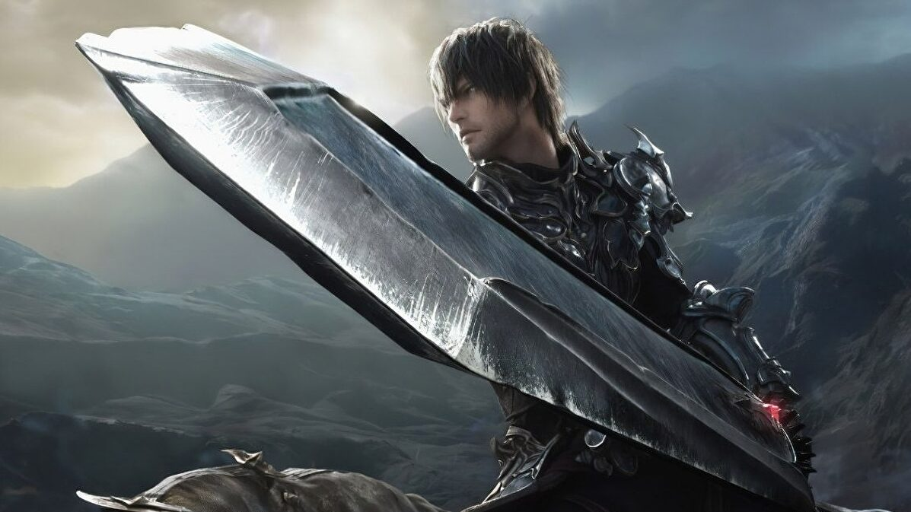

Final Fantasy XVI revela data de lançamento em novo trailer eletrizante
Um novo trailer foi revelado no The Game Awards 2022
Um novo trailer de Final Fantasy XVI foi revelado no The Game Awards 2022. O vídeo mostrou pedaços da jogabilidade e revelou a data de lançamento: 22 de junho de 2023.
O novo trailer mostrou sequências do sistema de ação e combate de Final Fantasy XVI. Também nos mostraram um pouco mais do épico sistema de batalha Summon do jogo, com a presença Ifrit aparecendo, se destacando acima dos personagens humanos na tela.
Vimos Final Fantasy XVI pela última vez em outubro, onde o trailer 'Ambition' revelou como os cristais influenciam a história. Também mostraram mais detalhes dos personagens do jogo, o mundo de Valisthea e seus múltiplos reinos.
LEIA MAIS
1 - God of War Ragnarok Review
2 – Elden Ring ganha como Jogo do Ano no The Game Awards;
Embora esse mundo pareça semelhante a Ivalice, a terra de Final Fantasy XII e FF Tactics, muitos viram paralelos entre ele e cenários de fantasia como Westeros em Game of Thrones, algo que discutimos em nossa entrevista exclusiva com a equipe de desenvolvimento.